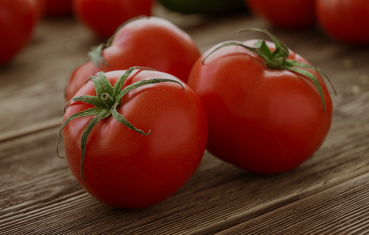

Qui sommes-nous ?

Julien Morel

Elisabeth Morel

Tomates
Nos tomates sont cultivées avec soin dans notre potager, à l’abri des produits chimiques et au rythme de la nature. Cueillies à maturité, elles ont ce goût unique de soleil et de fraîcheur que seules les tomates du jardin peuvent offrir. Croquantes, juteuses et pleines de saveurs, elles sont parfaites pour vos salades, vos sauces maison ou simplement à déguster nature, avec un filet d’huile d’olive.
Tomates
Nos tomates sont cultivées avec soin dans notre potager, à l’abri des produits chimiques et au rythme de la nature. Cueillies à maturité, elles ont ce goût unique de soleil et de fraîcheur que seules les tomates du jardin peuvent offrir. Croquantes, juteuses et pleines de saveurs, elles sont parfaites pour vos salades, vos sauces maison ou simplement à déguster nature, avec un filet d’huile d’olive.
Tomates
Nos tomates sont cultivées avec soin dans notre potager, à l’abri des produits chimiques et au rythme de la nature. Cueillies à maturité, elles ont ce goût unique de soleil et de fraîcheur que seules les tomates du jardin peuvent offrir. Croquantes, juteuses et pleines de saveurs, elles sont parfaites pour vos salades, vos sauces maison ou simplement à déguster nature, avec un filet d’huile d’olive.
Tomates
Nos tomates sont cultivées avec soin dans notre potager, à l’abri des produits chimiques et au rythme de la nature. Cueillies à maturité, elles ont ce goût unique de soleil et de fraîcheur que seules les tomates du jardin peuvent offrir. Croquantes, juteuses et pleines de saveurs, elles sont parfaites pour vos salades, vos sauces maison ou simplement à déguster nature, avec un filet d’huile d’olive.
Tomates
Nos tomates sont cultivées avec soin dans notre potager, à l’abri des produits chimiques et au rythme de la nature. Cueillies à maturité, elles ont ce goût unique de soleil et de fraîcheur que seules les tomates du jardin peuvent offrir. Croquantes, juteuses et pleines de saveurs, elles sont parfaites pour vos salades, vos sauces maison ou simplement à déguster nature, avec un filet d’huile d’olive.

Patates
Nos pommes de terre sont cultivées avec soin dans notre potager, sans produits chimiques et dans le respect du rythme de la nature. Récoltées à maturité, elles offrent cette saveur authentique du terroir, à la fois douce et généreuse. Fermes, fondantes et pleines de caractère, elles se prêtent à toutes vos envies : rôties au four, en purée onctueuse, sautées à la poêle ou simplement vapeur, avec une noisette de beurre et une pincée de sel.
Conseils & Tutos
Comment conserver les fruits et légumes après l’achat ?
La clé, c’est de respecter les besoins de chaque produit. Les légumes racines (pommes de terre, carottes, oignons) aiment un endroit frais, sec et à l’abri de la lumière.
Les fruits fragiles (fraises, abricots, tomates cerises) se conservent plutôt au réfrigérateur, dans le bac à légumes.
Les légumes à feuilles (salades, herbes) doivent être enveloppés dans un linge humide ou dans un sac en papier pour garder leur fraîcheur.
💡 Évitez les sacs plastiques fermés : ils favorisent l’humidité et accélèrent la décomposition.
Comment bien choisir son terreau ?
Choisissez votre terreau selon le type de plante :
Universel pour la plupart des plantes d’intérieur et balconnières.
Potager pour les légumes et fruits, plus riche en nutriments.
Semis pour jeunes pousses, plus léger et aéré.
Acidophile pour hortensias, azalées, rhododendrons.
💡 Un bon terreau doit être léger, bien drainé et sentir la terre fraîche !
Comment conserver les fruits et légumes après l’achat ?
Simplifiez vos plantations grâce à notre calendrier des semis et récoltes ! Ce guide pratique vous indique, mois par mois, quand semer, planter et récolter vos légumes, fruits et aromatiques. Imprimez-le ou gardez-le sur votre téléphone pour toujours savoir quoi planter à quel moment.
Comment se déroule l’achat?
Ce site est avant tout une vitrine : il vous permet de découvrir les fruits, légumes et produits dérivés actuellement disponibles. Vous pouvez consulter les nouveautés, vérifier les produits de saison et préparer votre sélection à l’avance. Ensuite, il vous suffit de venir récupérer vos produits à notre point de vente, où vous pourrez régler votre commande sur place. 💡 C’est simple, local et toujours en direct avec nous !
Vendez-vous du compost ou d’autres produits pour le jardin ?
Oui, en plus de nos fruits et légumes, nous proposons une gamme de produits dérivés pour le jardin : compost, terreau naturel, jus, et parfois des graines ou jeunes plants. Nos produits sont choisis pour leur qualité et leur respect de l’environnement, afin de vous aider à entretenir un potager sain et productif toute l’année.